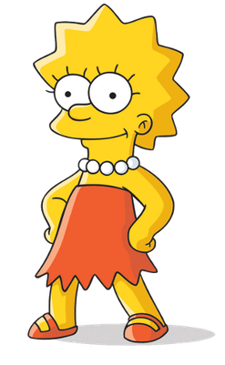

Simpson family

The Simpsons are the main protagonists of the TV show The Simpsons.
The family first appeared on The Tracey Ullman Show, in the comedy short Good Night.
The family has hundreds of relatives, including Mr. Burns and Patty and Selma.

Homer Jay Simpson (born May 12, 1956)is the main protagonist of The Simpsons series (or show).
He is the spouse of Marge Simpson and father of Bart, Lisa and Maggie Simpson.
Homer is overweight (said to be ~240 pounds), lazy, and often ignorant to the world around him.
Although Homer has many flaws, he has shown to have great caring, love, and even bravery to those he cares about and, sometimes, even others he doesn't.
He also serves as the main protagonist of the The Simpsons Movie.
His favorite color is blue and he enjoys dancing, eating donuts, drinking, hugging, driving a sit-down arcade racer, playing the piano and horse riding.
His favorite kiddie rides are "Stuart Little", "Barney Train" and "Ride the Champion Mechanical Horse".
- “D'oh!”
―Homer when he makes a mistake.
- “Woo-hoo!”
―Homer when something good happens to him.
- “Shut up Flanders!”
―Homer also to his neighbor.
- “Lisa! Knock off that racket!”
―Homer when Lisa plays her saxophone.

Bartholomew "Bart" Jojo Simpson (born April 1 or February 23) is the mischievous, rebellious, misunderstood, disruptive and "potentially dangerous" oldest child of the Simpson family in The Simpsons.
He is the only son of Homer and Marge Simpson, and the older brother of Lisa and Maggie.
He also has been nicknamed "Cosmo", after discovering a comet in "Bart's Comet".
Bart has also been on the cover on numerous comics, such as "Critical Hit", "Simpsons Treasure Trove #11", and "Winter Wingding".
Bart also has a 100-issue comic series entitled the Simpson Comics Presents Bart Simpson. Bart is loosely based on Matt Groening and his older brother, Mark Groening.
Even at a young age, Bart has accomplished many feats.
He has won an award for his Angry Dad web series, he has discovered a new comet which was named after him, and he also has performed in a successful band with Milhouse Van Houten, Nelson Muntz, and Ralph Wiggum.
- “Ay Caramba!”
―Bart's catchphrase and first words
- “Eat my shorts!”
―Bart's second catchphrase
- “I didn't do it!”
―Bart's earlier catchphrase
- “Don't have a cow, man.”
―Bart's third catchphrase.

Lisa Marie Simpson (born May 9)is the elder daughter and middle child of the Simpson family and one of the two tritagonists (along with Marge,) of The Simpsons series.
In "Homer and Lisa Exchange Cross Words" she is also known as Lisa Bouvier.
She was named after a train called Lil' Lisa on her parents' 1st anniversary.
She is a charismatic 8-year-old girl, who exceeds the standard achievement of the intelligence level of children her age.
- “Ay Caramba!”
―Bart's catchphrase and first words
- “Eat my shorts!”
―Bart's second catchphrase
- “I didn't do it!”
―Bart's earlier catchphrase
- “Don't have a cow, man.”
―Bart's third catchphrase.